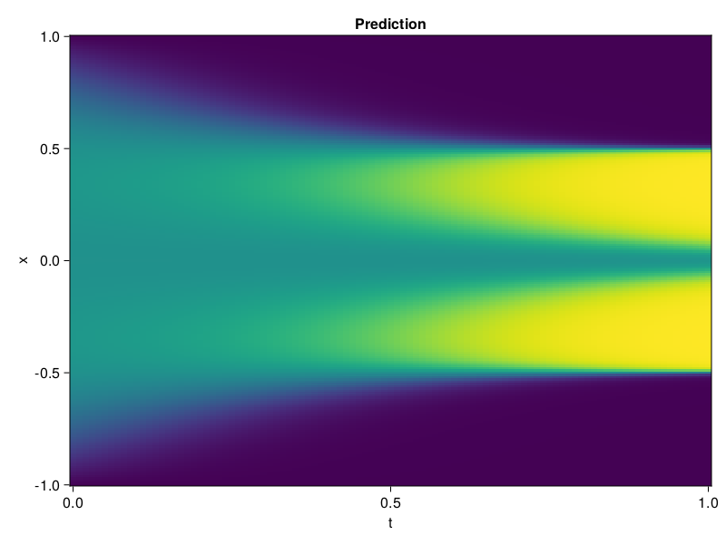

Allen-Cahn Equation with Sequential Training
In this tutorial we are going to solve the Allen-Cahn equation with periodic boundary condition from $t=0$ to $t=1$. The traning process is split into four stages, namely $t\in [0,0.25]$, $t\in [0.0,0.5]$, $t\in [0.0,0.75]$ and $t\in [0.0, 1.0]$.
using ModelingToolkit, IntervalSets
using Sophon
using Optimization, OptimizationOptimJL
@parameters t, x
@variables u(..)
Dₓ = Differential(x)
Dₓ² = Differential(x)^2
Dₜ = Differential(t)
eq = Dₜ(u(x, t)) - 0.0001 * Dₓ²(u(x, t)) + 5 * u(x,t) * (abs2(u(x,t)) - 1.0) ~ 0.0
domain = [x ∈ -1.0..1.0, t ∈ 0.0..0.25]
bcs = [u(x,0) ~ x^2 * cospi(x),
u(-1,t) ~ u(1,t)]
@named allen = PDESystem(eq, bcs, domain, [x, t], [u(x, t)])\[ \begin{align} - 0.0001 \frac{\mathrm{d}}{\mathrm{d}x} \frac{\mathrm{d}}{\mathrm{d}x} u\left( x, t \right) + 5 \left( -1 + \left|u\left( x, t \right)\right|^{2} \right) u\left( x, t \right) + \frac{\mathrm{d}}{\mathrm{d}t} u\left( x, t \right) =& 0 \end{align} \]
Then we define the neural net, the sampler, and the training strategy.
chain = FullyConnected(2, 1, tanh; hidden_dims=16, num_layers=4)
pinn = PINN(chain)
sampler = QuasiRandomSampler(500, (300, 100))
strategy = NonAdaptiveTraining(1, (50, 1))
prob = Sophon.discretize(allen, pinn, sampler, strategy)OptimizationProblem. In-place: true
u0: ComponentVector{Float64}(layer_1 = (weight = [-1.2522473335266113 1.4085615873336792; 0.10312291234731674 -1.9739658832550049; … ; -0.6789132356643677 -1.330883264541626; 0.1955167055130005 -0.3250132203102112], bias = [0.0; 0.0; … ; 0.0; 0.0;;]), layer_2 = (weight = [-0.5351813435554504 -0.6888930201530457 … -0.12698780000209808 -0.3893011808395386; -0.6528691053390503 -0.20984262228012085 … 0.1609426885843277 0.12338744848966599; … ; -0.5938920974731445 0.08880822360515594 … -0.6369176506996155 -0.02841891348361969; -0.4942021071910858 0.2717813551425934 … 0.4729882776737213 0.6589407920837402], bias = [0.0; 0.0; … ; 0.0; 0.0;;]), layer_3 = (weight = [0.5062903761863708 -0.32323014736175537 … -0.651817798614502 -0.35095101594924927; 0.3041743338108063 0.581364631652832 … 0.29262885451316833 0.4440377652645111; … ; 0.35026559233665466 0.5254327654838562 … -0.19258840382099152 -0.6137465238571167; -0.38021060824394226 -0.4075276255607605 … -0.4079728424549103 0.2588907778263092], bias = [0.0; 0.0; … ; 0.0; 0.0;;]), layer_4 = (weight = [0.12116077542304993 -0.3496181070804596 … -0.5910865664482117 -0.4660694897174835; -0.08896505832672119 -0.07488026469945908 … -0.6545819640159607 0.47927194833755493; … ; -0.14896447956562042 0.5630389451980591 … 0.5696415901184082 0.022930681705474854; 0.014172377064824104 0.6901228427886963 … 0.5504676699638367 -0.6515838503837585], bias = [0.0; 0.0; … ; 0.0; 0.0;;]), layer_5 = (weight = [-0.4955226182937622 -0.34621331095695496 … 0.5909922122955322 0.3641417622566223], bias = [0.0;;]))We solve the equation sequentially in time.
function train(allen, prob, sampler, strategy)
bfgs = BFGS()
res = Optimization.solve(prob, bfgs; maxiters=2000)
for tmax in [0.5, 0.75, 1.0]
allen.domain[2] = t ∈ 0.0..tmax
data = Sophon.sample(allen, sampler)
prob = remake(prob; u0=res.u, p=data)
res = Optimization.solve(prob, bfgs; maxiters=2000)
end
return res
end
res = train(allen, prob, sampler, strategy)u: ComponentVector{Float64}(layer_1 = (weight = [-2.6070064955266328 1.172276245739583; -0.28386430742671087 -2.3628659674170214; … ; -0.7548114349136573 -0.7726994089507755; 0.7859149253036994 -0.23564852382996831], bias = [-2.242081269149244; -0.7647886285660879; … ; 0.7375503527676857; 0.448182718408537;;]), layer_2 = (weight = [-0.6622567900770001 -1.1209518024385217 … 0.02512251797725297 -0.4443907107829116; -0.8012001104830699 -0.5610811040671692 … 0.4485466786575704 0.16262627429185134; … ; -1.2296545431356631 -0.09472350259727082 … -0.21434141621028588 -0.12223988247113411; -1.0229402781315866 0.1986260703844449 … 0.14445062419161356 0.8176527317964299], bias = [0.036432072934434456; 0.33797665961861095; … ; 0.2061182300463591; 0.26001309948836127;;]), layer_3 = (weight = [0.5955637506808692 -0.3123255662652921 … -0.7541970808849945 -0.3751074005375086; 0.15538295006616398 1.250535068704074 … 0.6743693511631271 0.295509842013884; … ; -0.7543688685196224 1.1498305910468367 … -0.044868956833532134 -0.3852199568132324; -0.2935559951537936 -0.1500332764137794 … -0.724990594070175 -0.03311304351948741], bias = [0.022132073692119544; -0.025247053207963464; … ; 0.1482379867998281; 0.17065865379348635;;]), layer_4 = (weight = [0.6904838138027407 -0.6633356856939604 … -0.6567730048530512 -0.5943158089846251; 0.14479271849021647 -0.30227214093293364 … -0.7257615487006845 0.44126934805696094; … ; -0.41645048192301093 1.7483240216544085 … 1.214260285034216 0.1061602726148994; -0.22807518338864324 0.8446676707425497 … 0.6596005570912172 -0.45423414469560863], bias = [-0.009782583009279155; 0.33065277307695323; … ; -1.3794481025576215; 0.16845232396468166;;]), layer_5 = (weight = [-0.6450400641851592 -0.5166954519832859 … 0.8214900017933693 -0.02833476681021509], bias = [-0.776535395079966;;]))Let's plot the result.
using CairoMakie
phi = pinn.phi
xs, ts = [infimum(d.domain):0.01:supremum(d.domain) for d in allen.domain]
axis = (xlabel="t", ylabel="x", title="Prediction")
u_pred = [sum(pinn.phi([x, t], res.u)) for x in xs, t in ts]
fig, ax, hm = heatmap(ts, xs, u_pred', axis=axis)